時代は記述式
情報がいつどこでも取得できる時代になったことで、逆に取得した知識が個人の中に定着する濃度が薄まったような気がします。
自分を省みても、例えばこのブログのように文章を書くという機会は多いものの、その全てがキーボード入力によるもの。
したがって、ペンを持って漢字を書くことがめっきり無くなってしまい、「読めるが書けない漢字」が増える一方です。
しかし、それではアカン！
書けてこその漢字ですし、「見れば思い出せる」ではなく、「自分の中から引き出せる」レベルで身に着けてこそ骨太な知識と言えるのではないでしょうか。
ということで、『第１回アウトプット選手権』を開催しました。
つまり、何も見ず自らの記憶のみを頼りに、いかに出題されたテーマの詳細を述べられるかというもの。
今回は絵で描けるもので対決しました。
対戦カードは「池村ＶＳホームページ支配人」
この記述式対決で、どれほど関心を持って物事を捉えてきたかが問われます。
熱戦の結果は…
さて、単なる絵心対決では意味が無いので、少しでも勉強に関連することがよいかなということで、まずは地理をテーマに。
お題は交互にテーマを言いつつ（もちろん自分が有利になりそうなお題でＯＫ）、対決結果はその都度お互い話し合って決めるというゆる～いルール。
（※池村お題：千葉県）
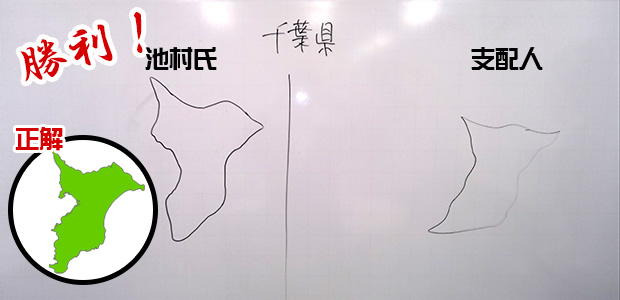
まあ、千葉県民たるものこれは描けないとね。
これは細部まで見ると池村勝利。
（※支配人お題：石川県） 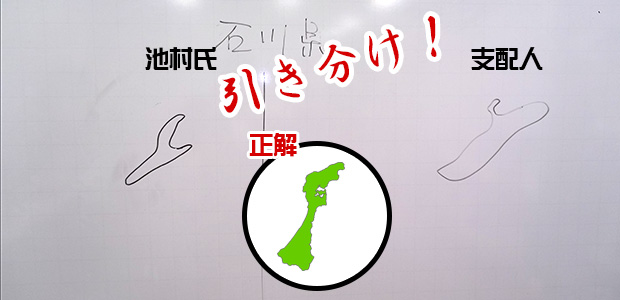
相談した結果、引き分けということに。
（※池村お題：埼玉県）
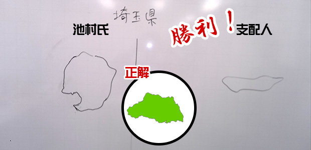
支配人勝利。
私は何を勘違いしたのか、関東全体をイメージして描いちゃいまいた（汗）。これは手痛い！
（※支配人お題：沖縄県）
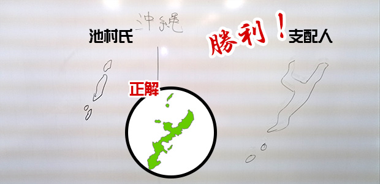
しまった、左の方に半島のようなものがあるのか…。
支配人勝利！
分が悪くなってきたので、世界に目を向けるか。
（※池村お題：アフリカ大陸）
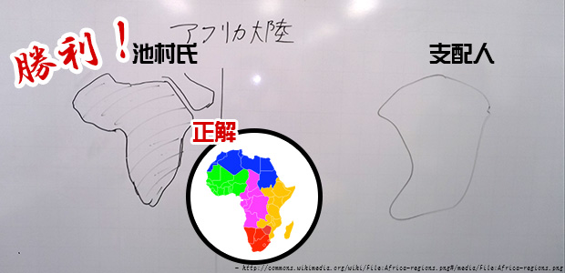
ふ～、さすがにこれは池村勝利。
昔話ですが、かつて塾の先輩講師で世界地図を何も見ずに白板にスラスラ描いちゃう人がいました。
先日の３０周年パーティでお会いしましたが、今は大学で先生をされているそうです。
さて、お互いに地理にも限界がきたのでまったく別のお題へ。
（※支配人お題：コカ・コーラのロゴ）
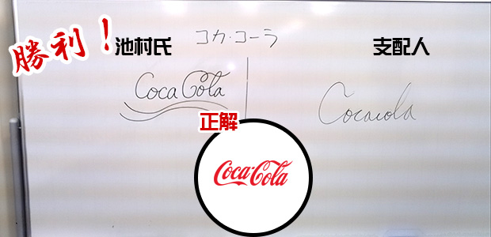
ふふふ、愚か者め！
私は若い頃、コカ・コーラのオシャレなデザインに目をつけ、何度か描いてみたことがあるのだよ。
ここは当然池村の勝利。
企業ロゴはお互いあまり知らないのでまたまた別のジャンルへ。
（※池村お題：サッカーボール）
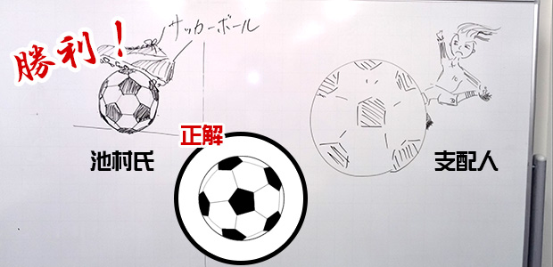
正二十面体の角を削るという数学的手法から美しく描きあげた池村が勝利。
いいぞ、流れがきた（笑）。
ここでＨＰ支配人が芸術方面を提案。
自信があるのだろうか…。
（※支配人お題：モナリザ）
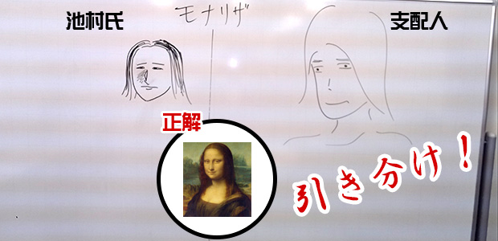
これは二人ともお粗末！
レオナルド・ダ・ヴィンチに失礼ではないか（汗）。
引き分け。
（※池村お題：ダビデ像）
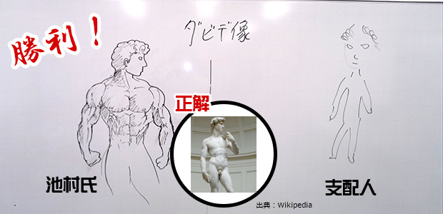
きた。これはもう筋肉方向へ持っていくことで余裕です。ミケランジェロ様ありがとう！
池村の勝利。
どうも支配人が圧倒的不利になってきたので、ハンデをつけることにしました。
支配人は、描く前に一度ネットの画像検索で見てよいということに。
これ、かなり有利になるんじゃ…まぁいいけど。
（※支配人お題：太陽の塔）
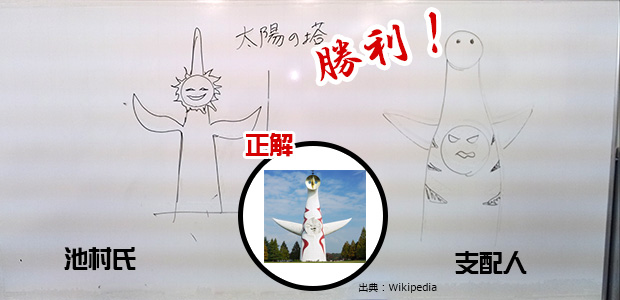
うわ、これは厳しい。
岡本太郎氏が大阪万博のためにデザインしたもの。
顔が二つあったとはね…。
支配人の勝利。
（※池村お題：スフィンクス）
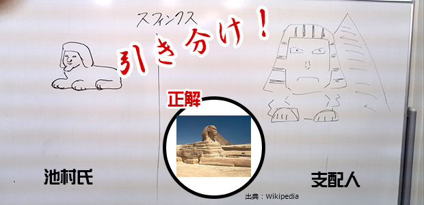
むむ…これは、ハンデがあるとは思えないイイ勝負なのでは？
一応引き分け。
いやぁ、人間の記憶っていい加減ですよね。
改めて自分の知識がまだまだ甘いということに気づかされました。
今回は絵を描くことで対決しましたが、言葉で詳細に説明したり、定義をどれだけ厳密に理解しているか、などを対決項目にするのも面白いかもしれません。
ぜひ第２回に期待して下さい。
ちなみに以下は番外編。
（※池村お題：キン肉マン）
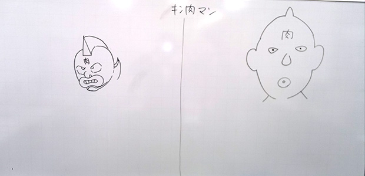
（※支配人お題：アンパンマン）
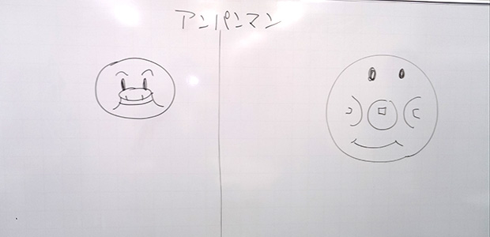
（※支配人お題：庄本氏）
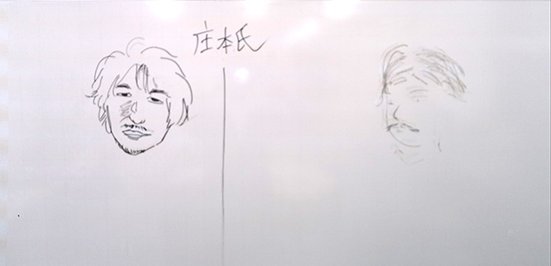